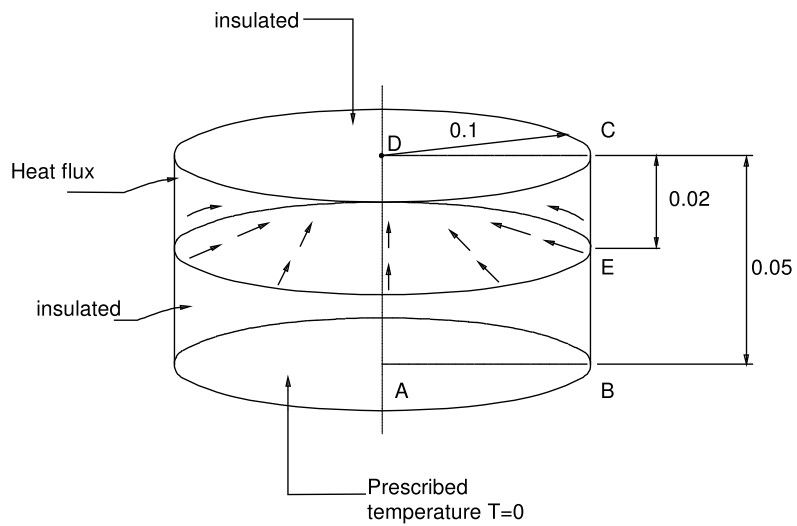
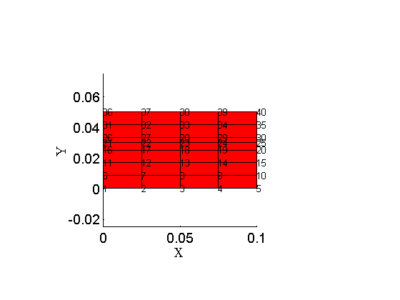
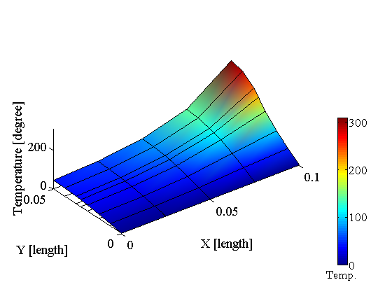

Circular cylinder with heat flux. Axially symmetric model.
Contents
Link to the m-file.
Description
The geometry is shown in Figure 1. The domain is a circular cylinder whose cylindrical surface is split into two parts, the bottom part is insulated and the top part is exposed to given heat flux.
The bottom circular face is held at temperature of 0° C, and the top circular face is insulated.
The problem is modeled as axially symmetric using linear quadrilaterals Q4.
Material: thermal conductivity = 52.0 W/m°C.
|  |
| Figure 1. Definition of the geometry of the benchmark |
Target solution: Temperature of 213.60°C at the circular boundary that separates the heat-flux loaded strip from the insulated bottom part of the cylindrical surface.
Reference: This is a test recommended by the National Agency for Finite Element Methods and Standards (U.K.): BMTTA(S), No. 15(i).
Solution
function pub_BMTTA_S_No15i_NAFEMS
pu= physical_units_struct;
Height of the cylinder.
H=0.05*pu.M;
Height of the upper part of the cylinder.
Ht=0.02*pu.M;
Radius of the cylinder
R=0.1*pu.M;
Material properties.
kappa=52.0*eye(2)*pu.W/pu.M/pu.K; % conductivity matrix
Prescribed temperature at the bottom.
T0=0*pu.K;% temperature at the right-hand side face
Number of elements through the height.
nH=6;
Number of elements through the radius.
nR=4;
Prescribed heat flux along the strip at the top. The heat flux is going into the domain hence the negative sign.
qb =-5e5*pu.W/pu.M^2;
Make sure the nodal locations include the target depth for the output.
xs=linspace(0,R,nR+1)';
ys=unique([linspace(0,H,nH+1), H-Ht])';;
[fens,fes] = Q4_blockx(xs,ys,struct('axisymm', true)); % Mesh
Display the mesh. The x-coordinate is the radial direction, the y-coordinate is the axial direction.
gv=drawmesh({fens,fes},'nodes','fes','facecolor','r');
view(2);
labels
 Package up the model data.
clear model_data
model_data.fens =fens;
The two-dimensional region uses the Gauss rule.
clear region region.conductivity =kappa; region.fes= fes; region.integration_rule =gauss_rule(struct('dim',2, 'order', 2)); model_data.region{1} =region;
Prescribed temperature at the bottom circular surface.
clear essential essential.temperature=T0; essential.node_list = fenode_select(fens,struct('box',[-inf,inf,0,0],'inflate',eps));; model_data.boundary_conditions.essential{1} = essential;
Prescribed heat flux at the top cylindrical portion of the surface.
clear flux
flux.normal_flux=qb;
Extract the boundary...
bfes= mesh_boundary(fes,struct('axisymm', true));
...and only the upper-strip mesh faces.
flux.fes=subset(bfes,fe_select(fens,bfes,struct('box',[R,R,H-Ht,H], 'inflate',eps)));
Recall that the heat flux is applied to the surface, but in the axially symmetric model the surface is represented by a cross-sectional curve. To integrate along the curve we need one-dimensional quadrature. The second direction is included automatically to produce a surface integral (multiplication with 2*pi).
flux.integration_rule=gauss_rule(struct('dim',1, 'order', 2)); model_data.boundary_conditions.flux{1}= flux;
Run the steady-state solver.
model_data =heat_diffusion_steady_state(model_data);
Plot the temperature distribution in the cross-section. Note that the X direction is radial, and the Y direction is axial.
model_data.postprocessing.z_scale = 0.0001;
model_data=heat_diffusion_plot_raised_surface(model_data);;
 Report the temperature along the circle separating the insulated part from the part where the heat flux is prescribed (marked E).
targetn =fenode_select(fens,struct('box',[R,R,H-Ht,H-Ht],'inflate',eps));; Tn =gather_values(model_data.temp, targetn); disp(['Temperature at E =' num2str(Tn) ', i. e. ' num2str(Tn/ 213.6*100) '% of the reference value'])
Temperature at E =212.0155, i. e. 99.2582% of the reference value
Discussion
The relatively coarse mesh produces results of decent accuracy.
end